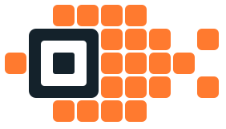
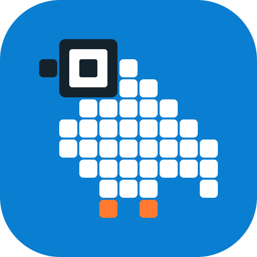
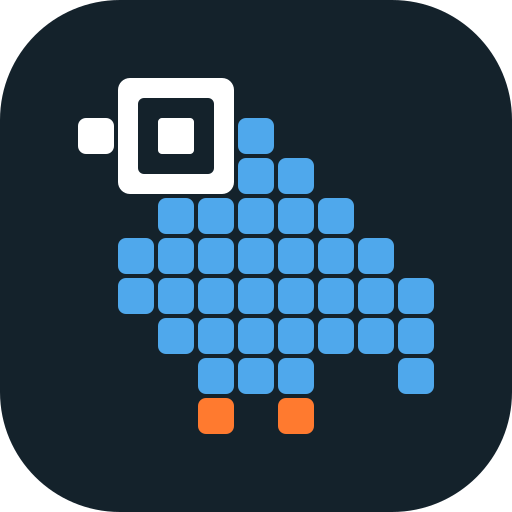
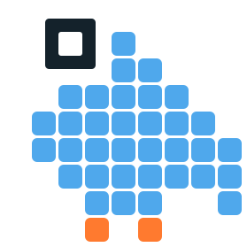

dove
dove
The online half of a Goldfish setup: it watches the wallet, builds the transaction and carries the signed one out, like a carrier pigeon. It never holds the keys.
Mark
A standing pigeon (the rock dove, the carrier pigeon's species) on a 9 × 9 grid: same module as the fish (9 on a 10 pitch, corner radius 2) and the Goldfish eye exactly, ink ring as on the fish, here as the head. Puffed chest, tail down, orange feet. Blue, so it never competes with the orange fish.
dove-mark.svg
App icon
128 tile, corner radius 30, like goldfish-icon.svg. The pigeon fills the 9 × 9 grid, so it sits at scale 1, centred: a module is the same size in both icons at every size.


Lockup
Mark, then the name in lowercase Rethink Sans 700, like goldfish. Same module size as the fish next to it.
dovedove
doveRules
- Don't redraw the eye. It's the Goldfish eye: ink ring on light, white ring on ink.
- Same module size as the fish whenever the two appear together.
- Blue bird, orange feet. The feet are the only orange; never orange in the body.
- On ink, the body is light blue
#4FA8EC. Case blue is too dark there; the light blue has the same contrast on ink as the fish orange (6.3:1). - Nothing in its beak or on its legs. No letter, no capsule, no keys, no coins: the name and copy carry the carrier story.